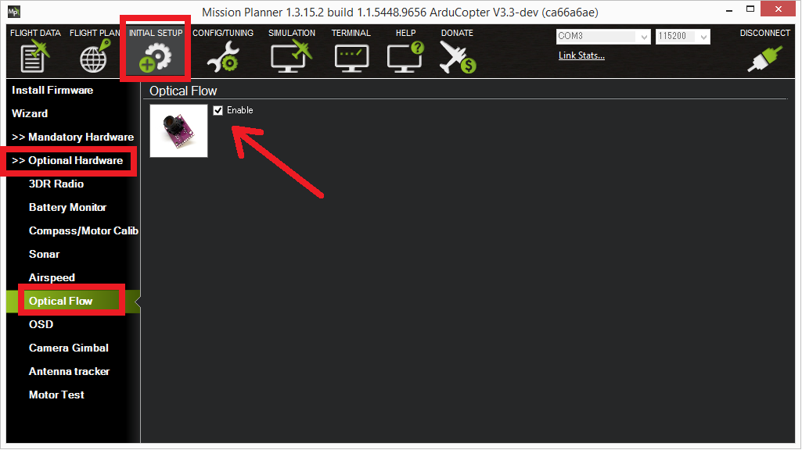

PX4FLOW Optical Flow Camera Board¶
[copywiki destination=”copter,plane,rover”]
This article describes how to setup the PX4FLOW (Optical Flow) Sensor which can be used for Non-GPS navigation.
Warning
The PX4FLOW is not yet supported in Plane or Rover.
Overview¶
The PX4FLOW (Optical Flow) Sensor is a specialized high resolution downward pointing camera module and a 3-axis gyro that uses the ground texture and visible features to determine aircraft ground velocity. Although the sensor may be supplied with a built-in Maxbotix LZ-EZ4 sonar to measure height, this has not been reliable enough over a range of surfaces in testing, so its readings are not used. It is recommended to purchase a PX4Flow device without the sonar. Instead a separate Range Finder such as the LightWare SF10b should also be attached to the vehicle.
Warning
To use this flow sensor you will need to purchase a separate range finder like the LightWare SF10b
Where to Buy¶
This sensor is available from numerous retailers including:
Install Drivers (Windows only)¶
On a Windows machine a “PX4Flow” device should appear in Connection drop-down of the Mission Planner (and the Windows Device Manager), or be automatically recognized by QGroundControl. If it does not you may need to download, unzip and manually install the px4flow windows driver which may in turn require allowing installing unsigned drivers.
Using MissionPlanner¶
Download and unzip the PX4Flow-KLT firmware (source code here)
Connect the PX4Flow sensor to your computer using a micro USB cable.
Open the Initial Setup, Install Firmware screen, select the COM port and click the “Load custom firmware” link. Select the px4flow-klt-06dec2014.px4 binary you downloaded in Step 1. You may need to unplug and plug back in the sensor to start the upload.
Disconnect and reconnect the sensor/USB cable
Select the appropriate COM port and press Connect
Open the Initial Setup > Optional Hardware > PX4Flow screen
Remove the lens cap and point the camera at a high contrast object at least 3m away. Remove the small screw that stops the lens from turning and adjust the focus until the image appears clearly
{kind=link}
{kind=link}
Using QGroundControl¶
In order to use QgroundControl, PX4Flow and ArduPilot, you will need to complete setup and focussing with the firmware loaded by QGroundControl, and then update the firmware to be compatible with ArduPilot.
Select the Vehicle Setup page, and click the Firmware tab.
Connect the PX4Flow sensor to your computer using a micro USB cable.
Check the “Standard Version (stable)” is selected in the right hand pane. Click “OK”. QGroundControl will flash a firmware that can be used to focus the lens.
Unplug and replug the sensor. Two extra tabs should appear: “PX4Flow” and “Parameters”.
Click “PX4Flow”, remove the lens cap and point the camera at a high contrast object at least 3m away. Remove the small screw that stops the lens from turning and adjust the focus until the image appears clearly. This will focus the device to infinity. Refit the screw.
Download and unzip the PX4Flow-KLT firmware (source code here)
Unplug the sensor, click on the “Firmware” tab and replug the sensor.
On the right hand side, click on the firmware version dropdown, and select “Custom firmware file”. Click “OK”. Then select the firmware downloaded above. QGroundControl should now flash a firmware compatible with ArduPilot. QGroundControl will now think that the sensor is a Pixhawk. Dont worry. Unplug it, and connect it to your autopilot.
Connect to the Pixhawk¶
{kind=link}
The sensor should be connected to the autopilot via the 4-pin I2C port. In most cases an I2C splitter should be used to allow other I2C devices (like the external RGB LED and GPS/Compass module’s compass) to share the same port.
Mounting to the Frame¶
The default mounting of the flow sensor is for it to be pointing straight down with the micro USB port pointing towards the front of the vehicle. On the back of the sensor you should see the axis printed, the X axis should point forwards and the Y axis to the right. The FLOW_ORIENT_YAW parameter can be used to account for other yaw orientations.
It is important that the flow sensor be mounted where it does not experience angular vibration that could blur the image.
Note
The default mounting orientation is different to that shown on the PX4FLOW wiki. If you mount the board as shown in the PX4FLOW wiki, you will need to set FLOW_ORIENT_YAW to -9000.
Enabling the sensor¶
{kind=link}
The sensor can be enabled by connecting to the autopilot with the Mission Planner and then on the Initial Setup | Optional Hardware | Optical Flow page check the Enable checkbox. Alternatively the FLOW_TYPE parameter should be set to “1” through the full parameters list. The sensor will be initialised once the Pixhawk board is rebooted.
If the sensor is reported to be unhealthy, it may help to set BRD_BOOT_DELAY to 600 (0.6 seconds) and reboot the autopilot. This will give more time for the sensor to start-up before the autopilot probes for it on the I2C bus.